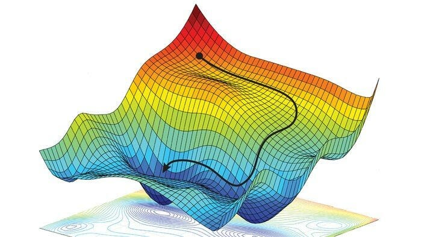
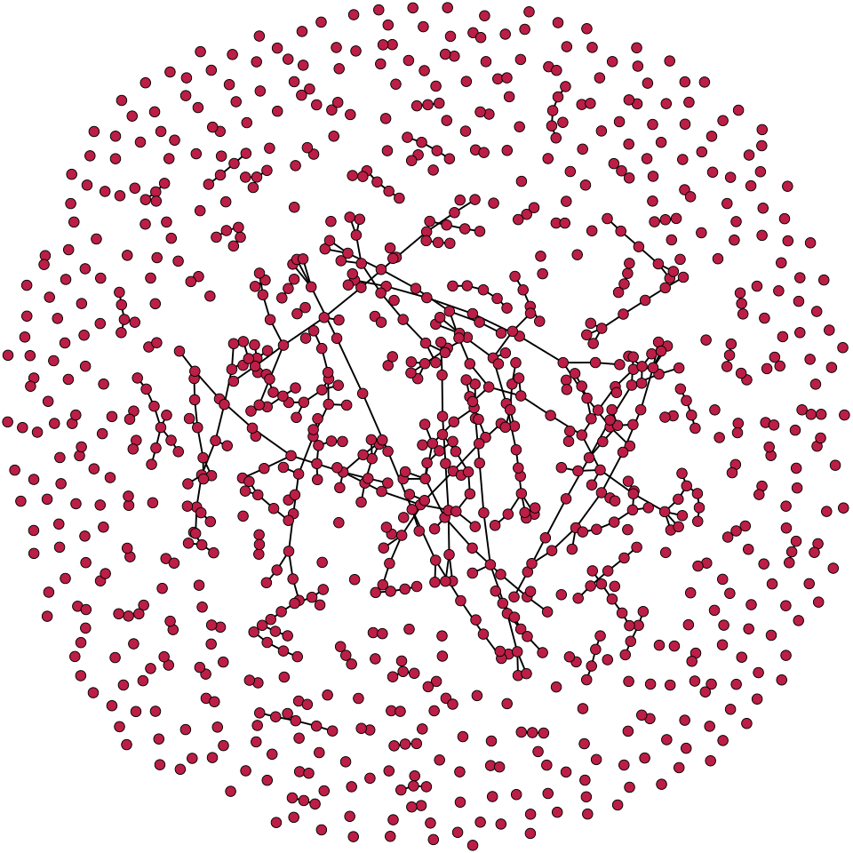
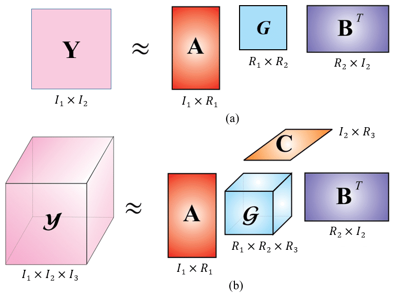

About Me
Hello! I am Danial Hosseintabar, a Student at MIT majoring Computer Science.
Projects
My work explores [specific area or problem]. Current projects include:
- 3D_Graphics: [Short description]
- Strategic Game: [Short description]
- Invisible Piano: [Short description]
- Chess AI: [Short description]
- Danialgorithms: [Short description]
- Text Editor: [Short description]
Coursework

Optimization
I took a course in optimization and found it to be one of the most enjoyable and intellectually stimulating subjects I’ve studied. I particularly appreciated the depth and clarity of the textbooks Convex Optimization by Boyd and Convex Optimization Theory by Bertsekas, both of which provided me with a strong theoretical foundation and practical insights. These resources not only deepened my understanding of convex analysis and duality but also proved to be incredibly helpful during my research, where optimization techniques played a central role. As a result, optimization has become one of my favorite topics, and I continue to explore its applications with great interest.

Discrete Probability and Stochastic Processes
In Spring 2025, I took the graduate-level mathematics course 18.619: Discrete Probability and Stochastic Processes, which turned out to be one of the most enjoyable and thought-provoking classes I’ve taken. The course covered a wide range of fascinating topics, including the Galton-Watson Process, Broadcast Process, the Lovász Local Lemma, various concentration bounds, martingales, stopping times, and many new insights into random graphs, especially Erdős–Rényi graphs. We also explored graphical models, Markov chains, MCMC methods, and mixing times, all of which significantly expanded my understanding of probabilistic methods and stochastic processes. I had a great time solving numerous challenging and fun problems related to these concepts, and the final project was a highlight—working in a team on an open problem made the learning experience collaborative and deeply engaging.

Tensor Decompositions
I took a course on Tensor Decompositions during university and found it to be an incredibly enjoyable and enriching experience. The first half of the class focused on foundational algorithms for matrices, such as LU decomposition, SVD, and eigen decomposition, with Matrix Computations by Gene H. Golub serving as the primary textbook. This part of the course solidified my understanding of linear algebraic techniques and their computational aspects. The second half delved deeper into tensor calculus and high-dimensional decompositions, covering methods like Canonical Polyadic Decomposition (CPD), Higher-Order Singular Value Decomposition (HOSVD), and Tucker decomposition. We studied both the theoretical foundations and the practical algorithms behind these techniques, along with their applications in machine learning, data science and signal processing. The blend of rigorous mathematics and real-world relevance made the class especially engaging and intellectually rewarding.
Reading list
Contact
If you would like to get in touch, please send me message in LinkedIn..